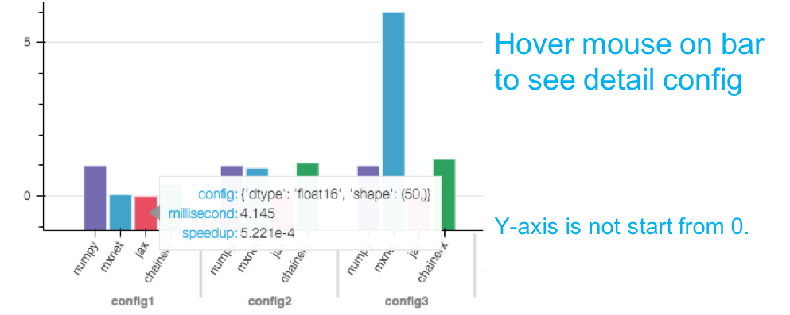

Operator reports¶
The finished operator reports are listed below.
For each operator, there is a bar chart report, x-axis shows configs, y-axis shows speedup rate with NumPy/MXNet, so that value of NumPy is 1 (when backward, value of MXNet is 1), and there is no bar if its backend is not implemented/supported. Some operators use a series of determined config, while others use random generated configs, hover the mouse over bars, you can see the detail config and results.
Note that for NumPy has no GPU support, the results in GPU version are computed by CPU on the GPU-machine. In addition, the y axis of the chart is not start from 0 so that the bar won’t be too short for hovering.
{kind=link}
Binary operators¶
Unary operators¶
- Operator abs
- Operator arccos
- Operator arccosh
- Operator arcsin
- Operator arcsinh
- Operator arctan
- Operator arctanh
- Operator cbrt
- Operator ceil
- Operator cos
- Operator cosh
- Operator deg2rad
- Operator degrees
- Operator exp
- Operator expm1
- Operator fix
- Operator floor
- Operator log
- Operator log10
- Operator log1p
- Operator log2
- Operator logical_not
- Operator rad2deg
- Operator radians
- Operator reciprocal
- Operator rint
- Operator sign
- Operator sin
- Operator sinh
- Operator sqrt
- Operator square
- Operator tan
- Operator tanh
- Operator trunc